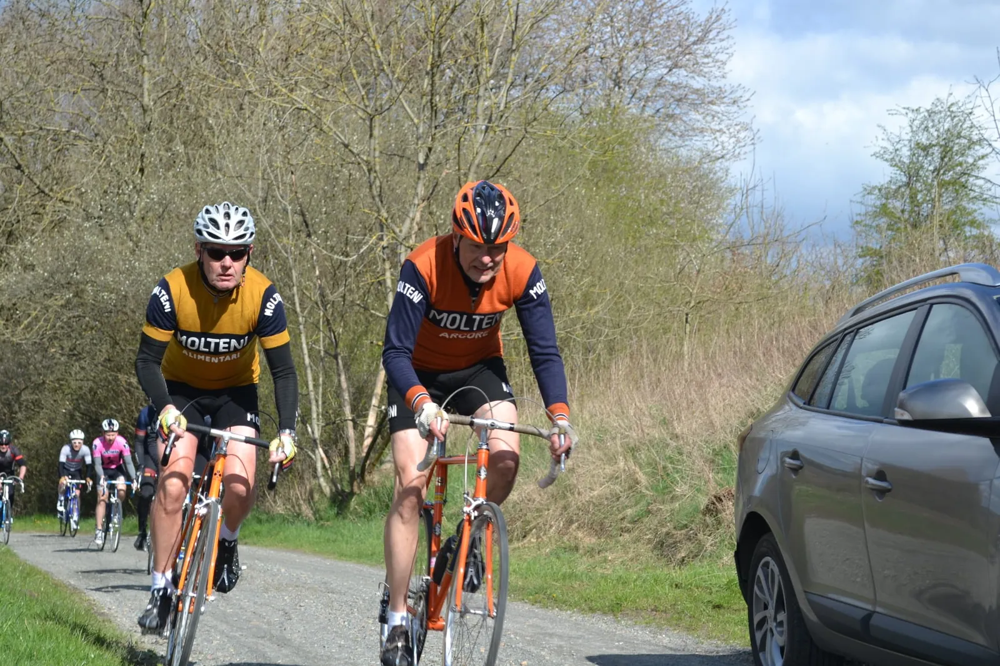
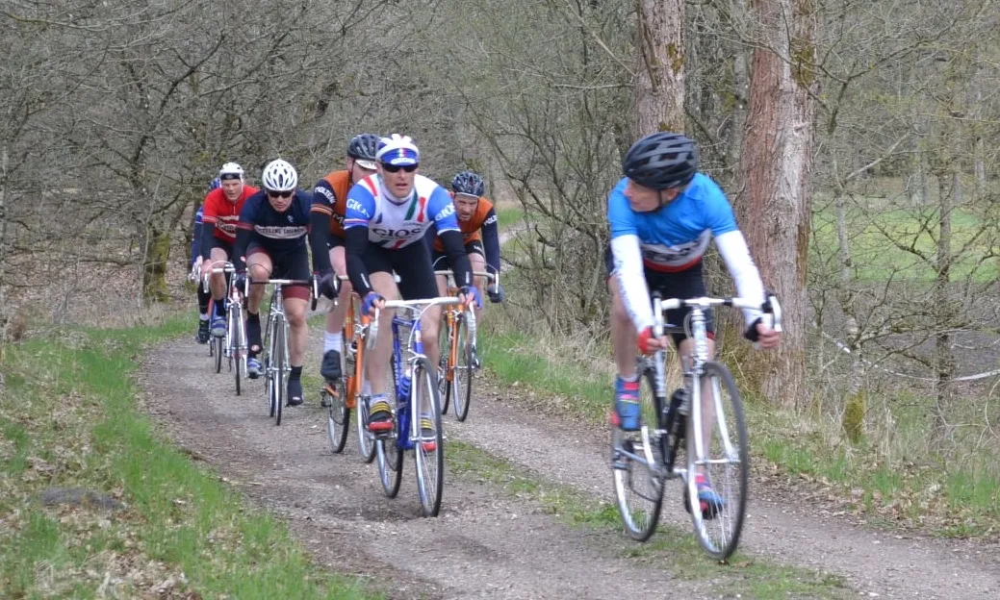

Grand Prix Vejle Ådal 2021 – en plan der gik i vasken og et løb med et helt specielt DNA.

Squadra Molteni havde en plan: En velgennemtænkt og genial plan. Men planen gik i vasken. Til gengæld levede Grand Prix Vejle Ådal (GVPÅ) op til sit eget DNA, med god og hyggelig stemning, lækkert cykelterræn – og efterhånden klassiske udfordringer med ruteafmærkningen.
Klokken er lidt over halv ni lørdag morgen. Squadra Molteni er ankommet til Bindeballe Købmandsgaard. Men der mangler noget: Hverken holdbus, Peter Meinert eller sportsdirektør i servicebil er dukket op!
Der er lettere forvirring at spore hos holdets ryttere.
Er du Kaptajn Bjørnsteen, lyder det pludseligt. Det er Bindeballekøbmanden første-komis, Asta Olsen, der kommer gående ud fra købmandsgården – med tre gule stykker papir i hånden.
Ja, det er mig, siger Kaptajn Bjørnsteen, det lige når at at tænke, om det drejer sig om et par ubetalte regninger på Bindeballebjæsk.
Der er kommet 3 telegrammer til dig, sige Asta, der allerede ser lidt bekymret ud.

Planen der gik i vasken
Den velgennemtænkte og geniale plan, der skulle sikre Squadra Molteni sejren i år, forsinder med de 3 telegrammer. Men en lettere uigennemtænkt plan bliver hurtigt strikket sammen over en kop kaffe ved indskrivningen:
Lars Munch og Løjtnant Kasper Sørensen skal beskytte Kaptajn Bjørnsteen på første omgang (50 km), hvorefter Bjørnsteen stikker i højre og venstre – og kører de sidste 50 km hjem alene. Carsten Jacobsen og Claus Bech skal bakker af i feltet.
Men også den plan går i vasken: Lars trækker DNF-kortet efter 50 km. Efter hård føringsarbejde på Col de Bøgevad er der ikke nok i tanken til de sidste 50 km. Løjtnanten og Kaptajnen trækker ligeledes DNF-kortet efter 50 km. Og Carsten og Claus kommer til at være toneangivende i feltet.


Jeg kunne godt mærke, at de to omgange jeg kørte i morges, sad lidt i benene. Og for øvrigt skal jeg være klar til ølsmagning senere i dag, afslørede Løjtnanten i vejsiden efter de første 50 km.
Hold kæft der blev kørt stærkt i førefeltet. Jeg sad og led på bakkerne – og jeg manglede i den grad klistrede dunke, hvis jeg skulle kunne følge med på 2. omgang, lød det fra Kaptajnen.


Grand Prix Vejle Ådal – løbet med et specielt DNA
Lad det være sagt med det samme: GPVÅ havde fået lavet helt nye og flotte afmærkningspile. De var røde og de var tydelige. Cadeau for det.
Den nye rute på 50 km pr. omgang, var rigtig god. Der var en pæn vifte af de klassiske stigninger og grus-pavéer. Og afmærkningen med de nye pile var god og tydelig. Altså lige indtil det gik galt:
Lidt efter Ny Nørup møder førefeltet en rød pil, der viser til højre mod Engelsholm Slot. Men kort efter viser en rød pil ind i Engelholm Skov via et singletrack-spor!?
Je ve æt hva der er gåv’en gal. Je sad i bilen, da Jørgen satte æ skilte up, lyder det fra Jørn, der er mindst lige så forvirret, som resten af førefelter, da de rammer parkeringspladsen foran Engelsholm Slot efter at have slået rekorden på Engelholm Skov mtb-spor.
Tilbage i målområdet er alt hygge. Solen skinner og Evan fortæller røverhistorier – og Bagmanden må grave dybt i forklaringskataloget, da han hører om episoden i Engelholm Skov.
Jamen, det ved jeg ikke noget om. Det var Jørn og Jørgen… Jeg må lige tjekke Strava. Hva’ pokker. Hvorfor går ruten ind i den skov? Det forstår jeg ikke … Det må være Strava, der selv har ændret ruten, lyder Bagmandens forklaring, mens han står og nærstuderer sin Strava-skærm og klør sig i skægget.
Jeg forstår det ikke. Jeg forstår det ikke. Jeg har nok klikket redigér, og så har Strava lavet om på ruten. Men det er sådan GVPÅ er. Man ved aldrig hvordan ruten er, indtil man kører forkert. Det er vores DNA, griner Bagmanden.
Og det har Bagmanden så evig ret i. Og det er derfor vi elsker GVPÅ.
Grand Prix Vejle Ådal 2021 skal have 7 ✭ ud af 6 mulige:
Én ✭ for Jan Panzerwagen,
én✭ for Anders Malte,
én✭ for Jørgen Lykke,
én✭ for Pelle Clemmesen,
én✭ for Jørn Nielsen
og én ✭ for Carsten Bagmand.
Og den sidste ✭ er for det helt særlige DNA.
Tak til GVPÅ. Squadra Molteni kommer igen til næste år – med en velgennemtænkt og genial plan – og vinder det hele…

Foto: GVPÅ